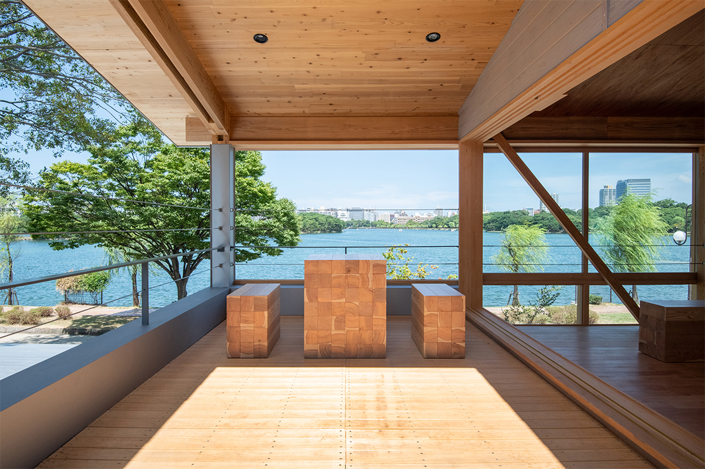
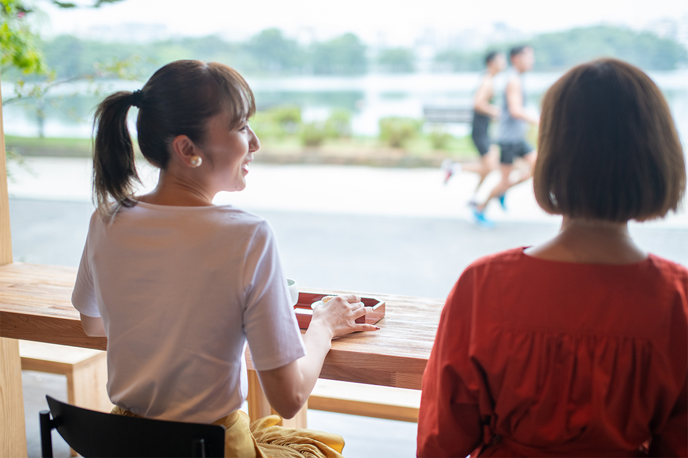
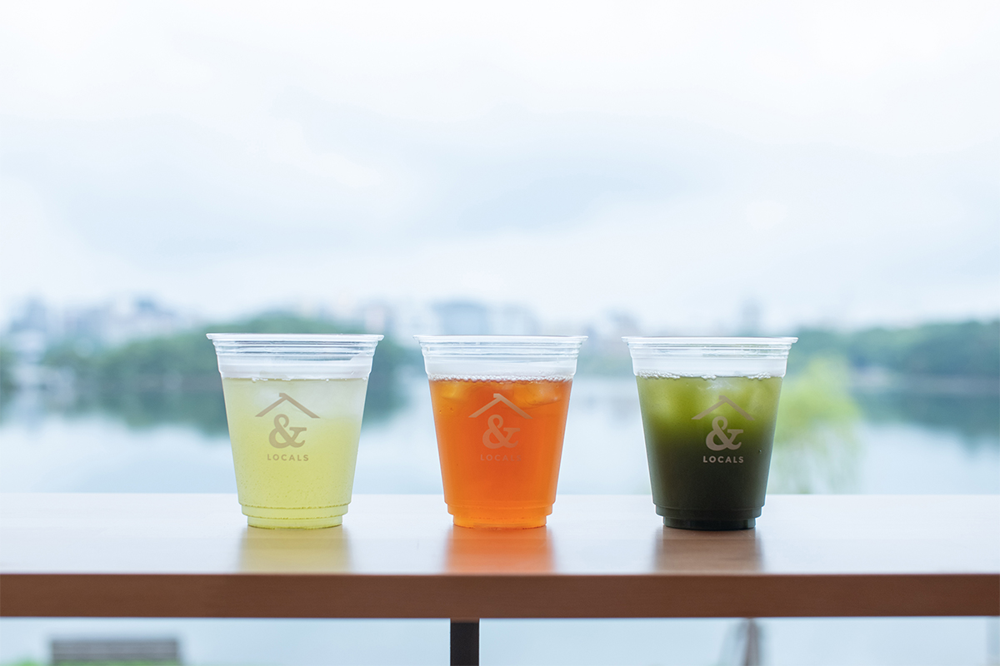
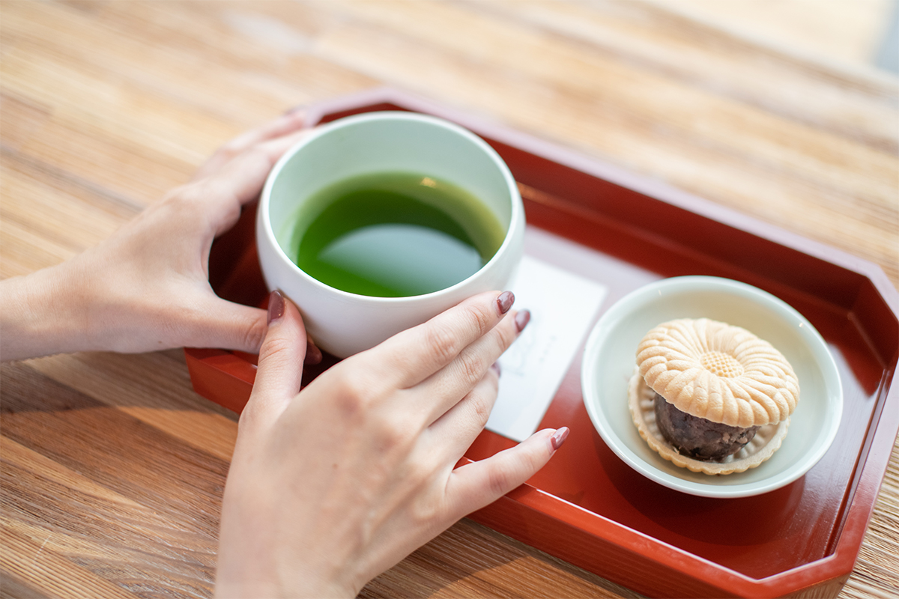
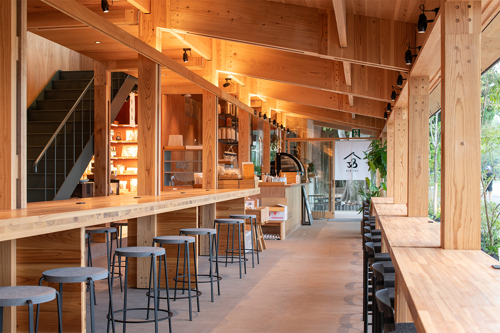
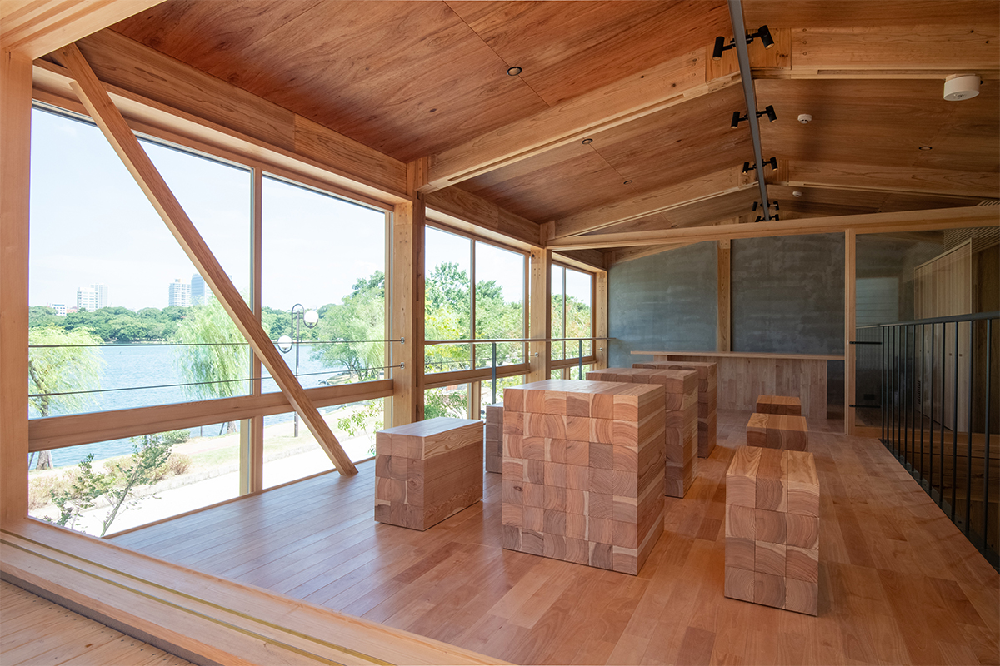
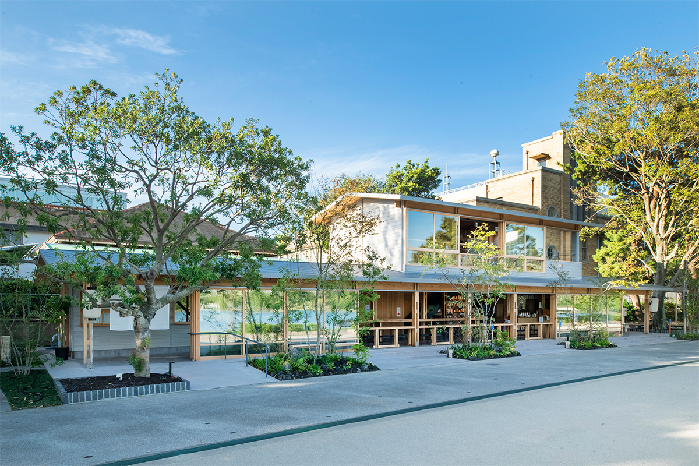
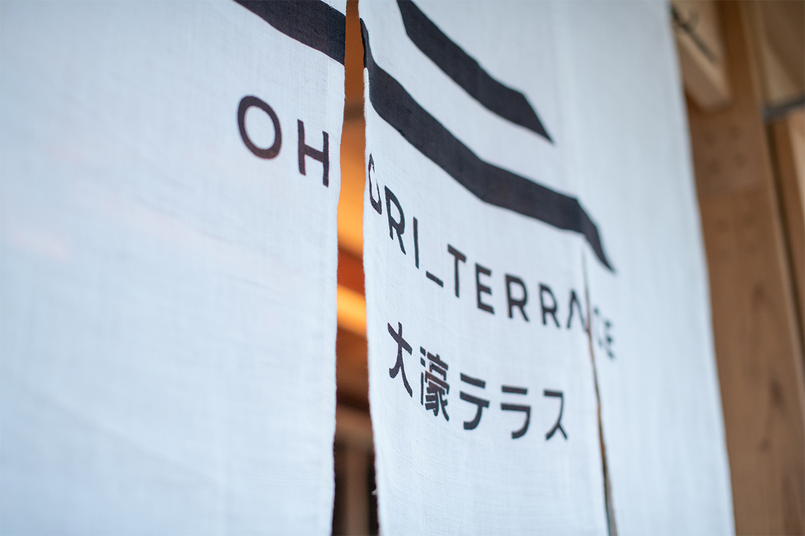

Префектура Фукуока · парк Охори · чай и архитектура
Ohori Terrace: чай Ямэ и деревянный павильон у пруда в парке Охори

Парк Охори лежит почти в самом центре Фукуоки, в двух станциях метро от Тэндзина. На его южном берегу, рядом с японским садом, стоит деревянный павильон Ohori Terrace, где пьют чай Ямэ и едят блюда из продуктов Кюсю.
Парк
Пруд на месте крепостного рва
Парк Охори находится почти в географическом центре Фукуоки. От Хакаты и Тэндзина, двух главных районов города, сюда около десяти минут на городском метро, поэтому парк любят и местные, и туристы. История у него долгая: его устроили на месте морского залива бухты Хаката, который когда-то служил внешним рвом замка Фукуока, а открыли в 1929 году.
Больше половины площади парка занимает огромный пруд. Вокруг него идёт прогулочная дорожка длиной около двух километров, и вдоль неё стоят сцена театра но, художественный музей, японский сад и детские площадки. Зелень и вода вокруг сделали парк любимым местом отдыха горожан.

Ohori Terrace стоит на южной стороне парка, по соседству с японским садом. Павильон открылся в сентябре 2020 года: префектура Фукуока хотела оживить эту часть парка и выбрала по конкурсу команду во главе с местной дизайнерской компанией, которая работает по всему Кюсю. Идея проекта в том, чтобы через продукты и ремёсла Фукуоки передавать японскую культуру следующим поколениям. Деревянное здание вписано в природу парка. На первом этаже работает кафе с магазином, где готовят из продуктов Фукуоки и других префектур Кюсю, а второй этаж отдан под зал с видом на пруд, который можно арендовать.
Чай
Кафе &LOCALS: чай Ямэ в разных видах
Главное в меню кафе &LOCALS это чай Ямэ, одна из гордостей префектуры Фукуока. Фирменное блюдо называется «Путешествующие инари»: в рис для мешочков из жареного тофу подмешивают продукты из разных уголков Кюсю. Напитков и закусок здесь много, но начать стоит с чая.

«Ямэ ансамбль» это смесь матча, чёрного и обжаренного чая из Ямэ с бурым рисом из Фукуоки. Вкус у неё ореховый, почти как у кофе, и она хорошо идёт с европейскими десертами. Для обжаренного чая ходзитя листья и стебли чая Ямэ долго жарят при высокой температуре, и послевкусие у него чистое и лёгкое. Третий популярный напиток соединяет сладковатый сэнтя с ярким лемонграссом из города Такэо в соседней префектуре Сага. Чай интересно подбирать к сладостям и блюдам, которые продают тут же.

При кафе есть небольшой продуктовый уголок. В нём продают те же продукты и приправы, из которых готовят напитки и блюда, так что понравившийся вкус можно увезти с собой.

Зал
Второй этаж с видом на пруд
Второй этаж сдают в аренду. Здесь есть столовая с кухней, гостиная с большими столами из цельного дерева и терраса под высоким потолком в два света. Зал вмещает до 40 человек. В нём есть 80-дюймовый экран 4K, проектор, колонки и кухонная посуда, а нужное оборудование и услуги можно обсудить заранее, в зависимости от задачи и числа гостей.

Архитектура
Дерево без металла

Проект павильона сделала фукуокская мастерская rhythmdesign, которой руководит архитектор Кэнъитиро Идэ. Главной задачей было вписать здание в пейзаж парка. Брусья здесь соединены по старинной японской технике, без металлических креплений: шип входит в гнездо и закрепляется деревянным нагелем. Эти приёмы соединили с современной технологией обработки дерева, которую используют во всём мире, и здание получилось японским по духу, но современным и лёгким на вид.
Из японского кедра суги местного происхождения сделаны и каркас здания, и стойки, и столы, поэтому внутри чувствуется тепло и запах дерева. Большие стеклянные двери сдвигаются на 11 метров на первом этаже и на 5 метров на втором, и тогда кажется, что сидишь прямо на улице.
Павильон Ohori Terrace стал новым местом, где можно ближе познакомиться с Фукуокой. После прогулки вокруг пруда сюда стоит зайти, чтобы спокойно посидеть с чашкой чая Ямэ.

Ohori Terrace
- Адрес
- префектура Фукуока, Фукуока, район Тюо, Охори-коэн, 1-9
- Телефон
- +81 92-401-0275 (кафе &LOCALS)
- Часы работы
- 9:00–18:30, последний заказ в 18:00 (кафе &LOCALS)
- Выходные
- понедельник (если это праздник, то следующий день)
- Как добраться
- 10 минут пешком от станции метро Охори-коэн, 5 минут пешком от остановки автобуса Nishitetsu «Вход в замок Фукуока / центр NHK»
- Сайт
- ohori-terrace.jp